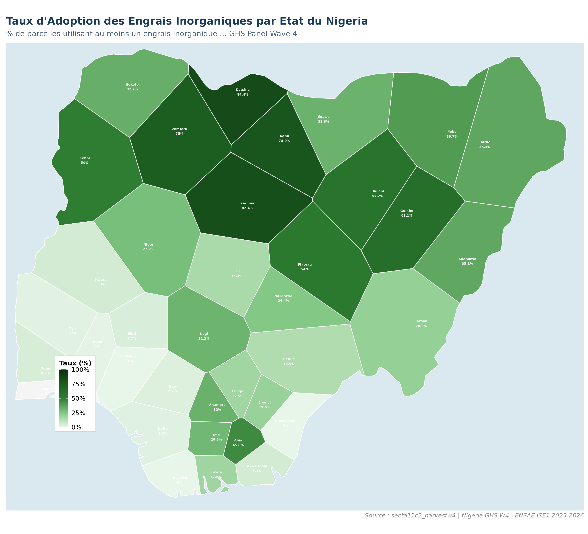
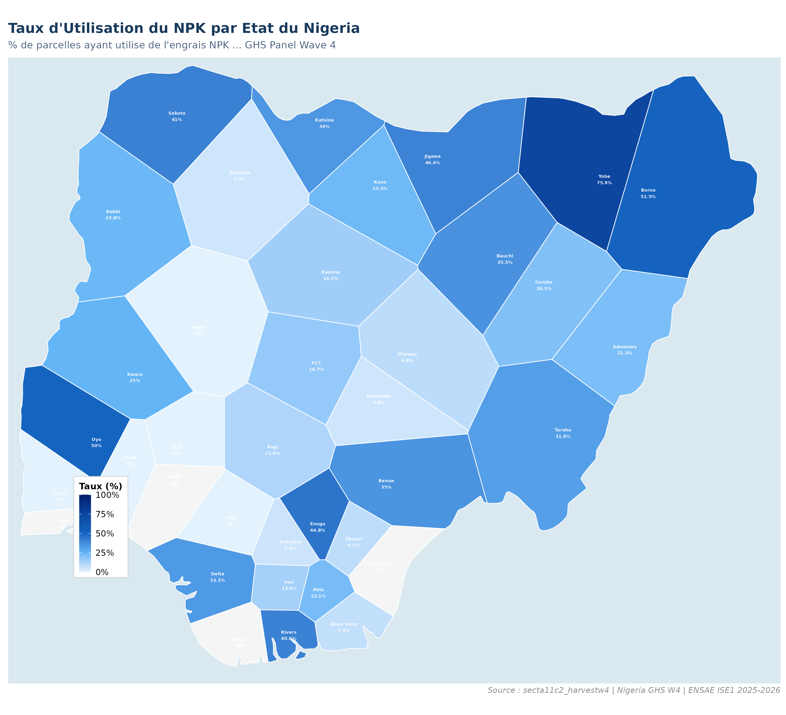
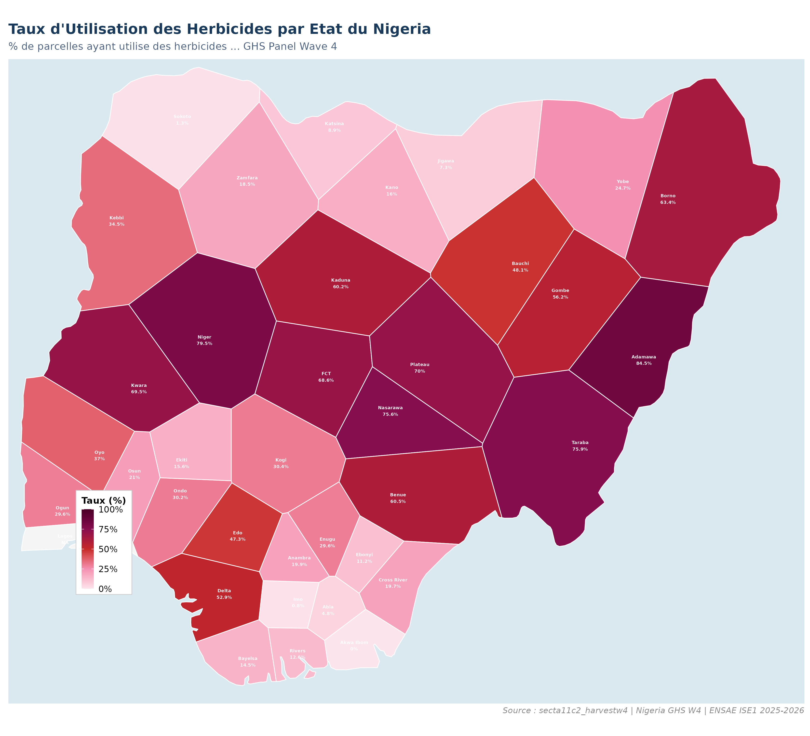
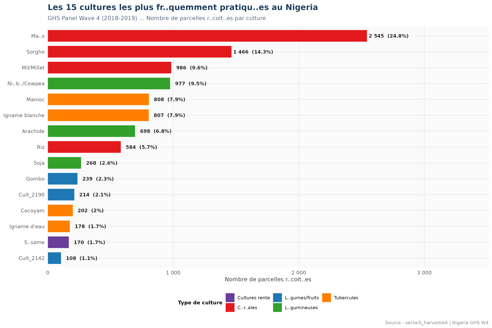
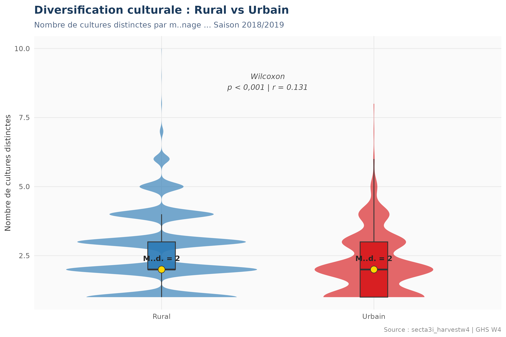
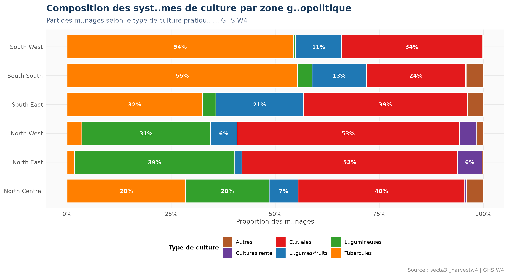
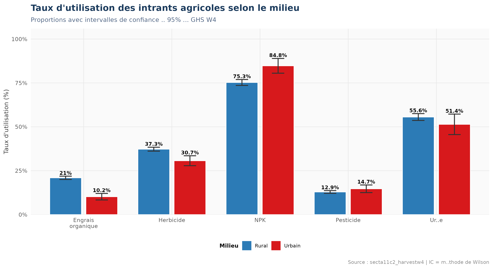
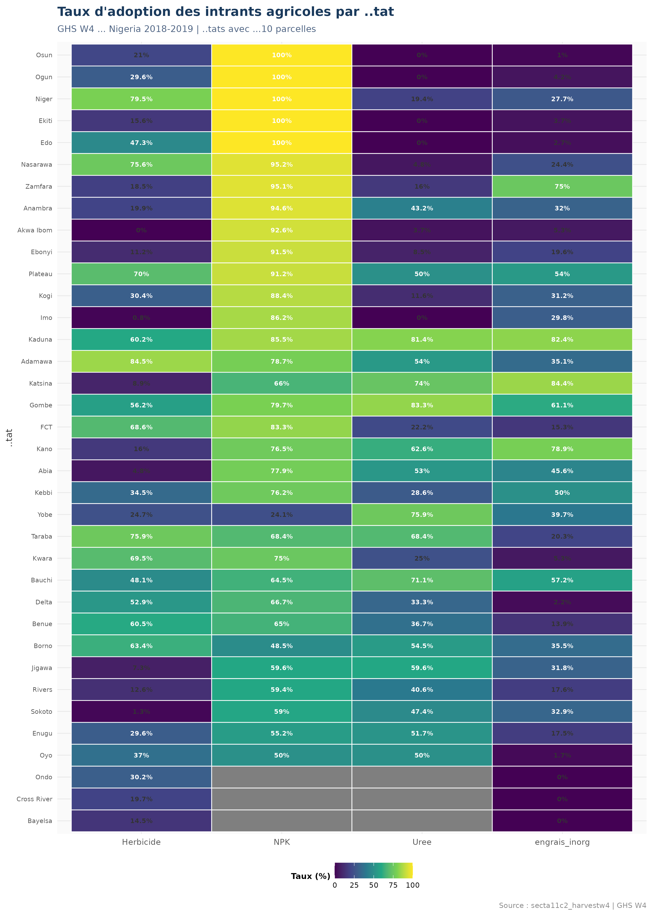
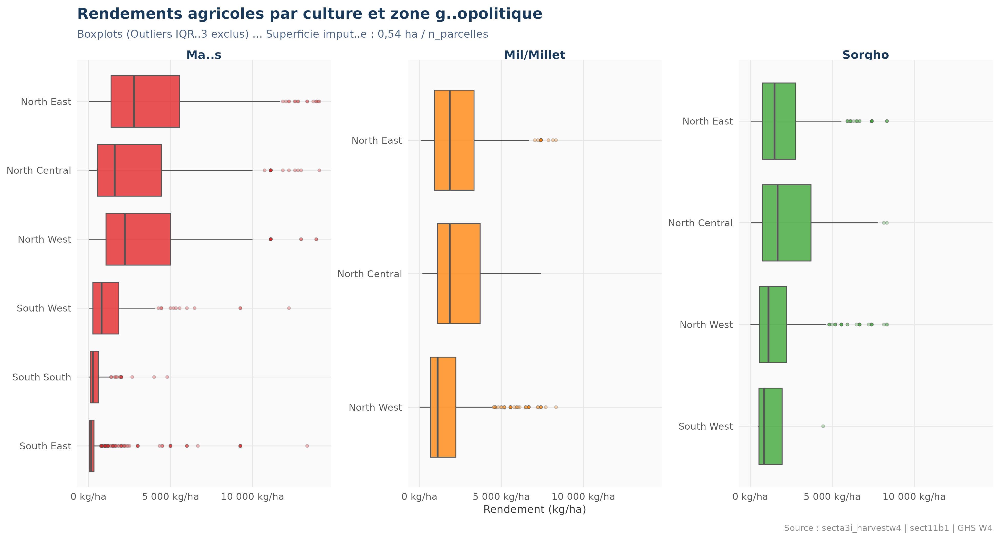
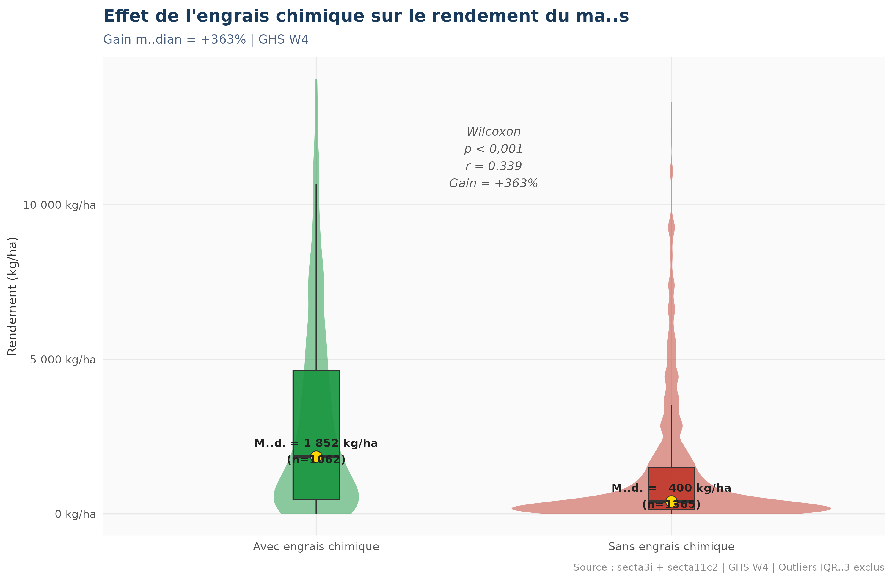

Nigeria General Household Survey Panel Wave 4 (2018-2019) | ENSAE ISE1 | 2025-2026
Cette analyse examine les systèmes de culture, l'utilisation des intrants agricoles et les rendements obtenus par les exploitations nigérianes. Le gap de productivité — rendements céréaliers nigérians nettement inférieurs aux potentiels variétaux — constitue le fil rouge de l'analyse.
Le maïs (24,8%) domine mais les ménages cultivent en moyenne 2,6 cultures (rural), stratégie vitale de gestion du risque alimentaire.
Seulement 33,6% des parcelles utilisent des engrais inorganiques. Ce fossé technologique explique en grande partie les faibles rendements observés.
+363% de gain médian maïs avec engrais chimique (1 852 vs 400 kg/ha). Wilcoxon p<0,001, r=0,339 : taille d'effet modérée à forte.








| Culture | N obs. | Min (kg/ha) | Q1 | Médiane | Moyenne | Q3 | Max (kg/ha) |
|---|---|---|---|---|---|---|---|
| Maïs | 2 427 | 3 | 200 | 800 | 2 110 | 2 963 | 14 074 |
| Mil/Millet | 951 | 12 | 741 | 1 481 | 1 992 | 2 778 | 8 333 |
| Sorgho | 1 402 | 10 | 739 | 1 481 | 1 879 | 2 593 | 8 333 |


La relation engrais → rendement est une association observationnelle, non une causalité établie. Les ménages utilisant des engrais peuvent avoir d'autres caractéristiques favorables (meilleur accès aux marchés, semences améliorées). Des méthodes quasi-expérimentales (PSM, DiD) seraient nécessaires pour isoler l'effet propre de la fertilisation.
| Test | Objectif | Statistique | p-value | Taille d'effet | Interprétation |
|---|---|---|---|---|---|
| Wilcoxon | Diversification ~ Milieu | W = 784 210 | < 0,001 | r = 0,131 (faible) | Rural > Urbain (diversification) |
| Chi-deux | Engrais ~ Milieu | X² = 18,75 | < 0,001 | V = 0,048 (très faible) | Association faible |
| Wilcoxon | Rendement maïs ~ Engrais | W = 1 011 173 | < 0,001 | r = 0,339 (modéré-fort) | +363% médian avec engrais |
L'effet de l'engrais chimique sur le rendement du maïs est le résultat le plus robuste (r=0,339, modéré à fort). La sous-utilisation des intrants (33,6%) combinée à leur impact prouvé sur les rendements constitue le principal levier d'amélioration de la productivité agricole nigériane. Des politiques de subvention ciblée des fertilisants, accompagnées de conseil agronomique, représentent l'intervention la plus prometteuse pour combler le gap de productivité.